Геометрический абстракционизм
- Наш мир искусства стал новым, беспредметным, чистым.
- (Казимир Малевич)
Работы в стиле геометрического абстракционизма у Юрия Тореева немногочисленны. Думаю, что это симптоматично для творчества Художника. Его кисть следует императивам эмоций и подсознания, а это несовместимо с использованием линейки и циркуля.
В работе (рис. 29) прямые тонкие линии и дуга полуокружности проведены пером от руки, а кругообразная фигура, нанесенная толстой кистью, существенно отступает от циркульной дуги.
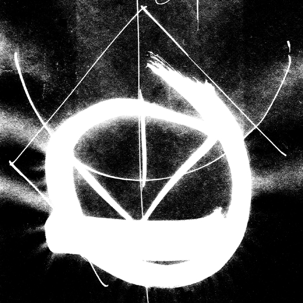
29.
Работа (рис. 30) — весёлая игра в лабиринт, старая, как мир, но вечно новая. Несколько напрягши воображение, можем увидеть здесь схему фигуры человека, состоящую из семи элементов. Из него, как из древнего Пуруши, можно создать целый мир.
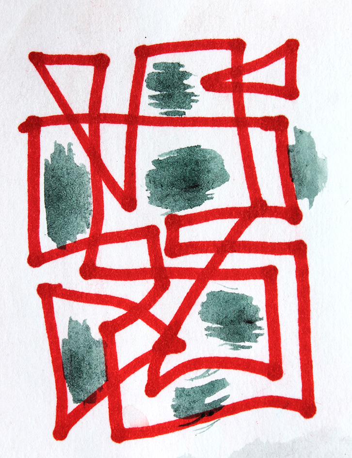
30.
Геометрические этюды (рис. 31) состоят из сочетаний прямых или дугообразных линий. Первый этюд — это натянутые струны рояля, клавиши и звуки музыки, переходящие от piano к forte и обратно. Второй этюд — вариация на темы космических форм и траекторий, немного напоминающая Р. Делоне и Х. Миро.
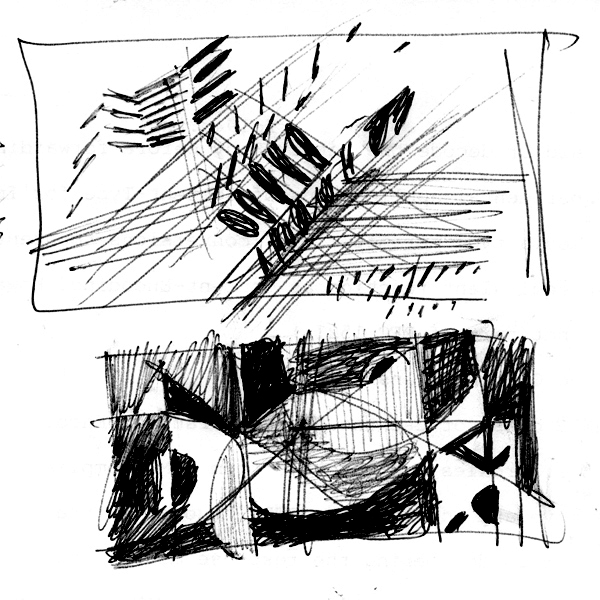
31.
Работа (рис. 32) достойна занять место на выставке концептуализма. Рукотворные наброски каких-то конструкций и композиций, сделанные на странице ненужной книги, по-видимому, не представляют собой художественной или культурной ценности, но поскольку они включены в портфолио Художника и заняли своё место в ресурсах Интернета — эти наброски приобретают статус произведения концептуального искусства. Девиз его: отрицая старое, создаём новое.
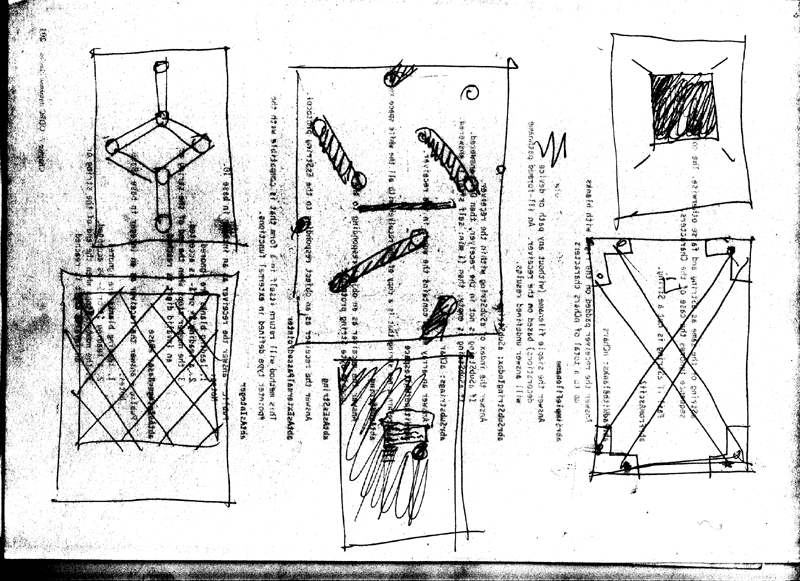
32.
Шедевр геометрического стиля Юрия Тореева — плакат «Рэспублiка Беларусь» (рис. 33) Здесь визуализируется излюбленный современной философией оксюморон: «Всё и ничто». Если сказать иначе: «Ничто и всё» — смысл остаётся тот же. С белого квадрата театральной сцены на нас смотрит Пустота. Всмотритесь в неё — и в вашем поле зрения возникнут какие-то неясные образы — пятна, полосы, точки — и всё это непрерывно движется…
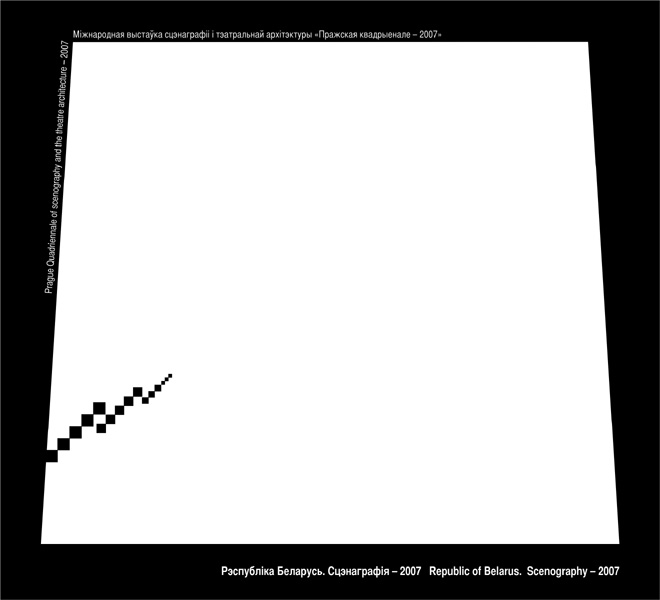
33.
Как будто на пустую сцену вышли актёры и начался спектакль — иллюзия жизни. Из пустоты возникла материя, из Ничто — Всё. Невозможно — скажете вы? Современная физика доказала, что в полном вакууме возникают энергетические поля и первичная материя.
На плакате Юрия Тореева мы видим, как начинается процесс создания сценического произведения: возникает трёхмерное пространство сцены. Остальное приложится.
Игры всерьёз
- — Ты человек иль демон?
- — Я игрок.
- (М. Лермонтов. «Маскарад»)
Есть такой род деятельности у серьёзных людей, в котором отсутствует практический смысл. На вопрос «зачем?» вам ответят: ради забавы, или препровождения времени, или для непринуждённого общения с другими людьми (в том числе для безнаказанного выражения недозволенных мыслей).
Эта деятельность называется «игра». Элемент игры, как отлично показал Й. Хейзинга, присутствует во всех процессах общения людей, где им приходится изображать или говорить не то, что они думают или чувствуют, а то, что положено по этикету (или по роли).
Существенный элемент игры есть и в искусстве плаката, в том числе в каллиграфических миниатюрах различных стилей. Шрифтовые этюды Ю. Тореева — это, по существу, игра — свободная и без правил. Художник высказывает какую-либо мысль, которую нужно понимать в обратном смысле. Например: он пишет слово «Свобода» узкими и длинными буквами, похожими на измождённых пленников концлагеря. Они прижаты друг к другу, крепко связаны, между ними нет пространства, нечем дышать. Над ними летают чёрные птицы, зловеще каркают, клюют её (свободу), и по обычаю птиц, пачкают сверху. Это мрачная игра.
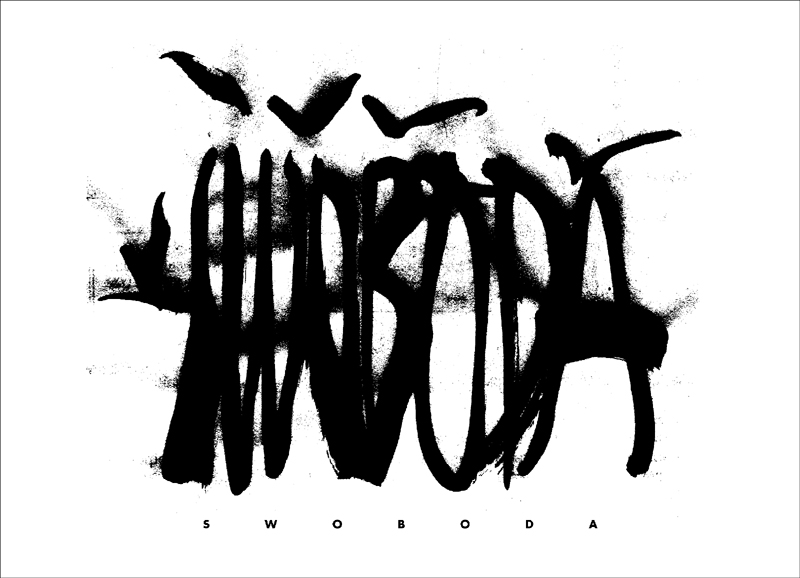
34.
«Каллиграфия» — это плакат к выставке «Лiтарт 2005» (рис. 35). Написанное здесь слово — дружеский шарж (если не пародия) на каллиграфию. Здесь разборчивы только первые четыре буквы. Остальные представляют собой путаницу более или менее плавных линий. Может быть, это символизирует упадок искусства письма в наше время, когда пишут шариковыми ручками, или вообще забыли, как писать — вместо этого печатают все тексты на компьютерах. Абсолютно неразборчивый текст в правом углу дополняет печальную (но красивую) картину состояния искусства каллиграфии в наших палестинах.
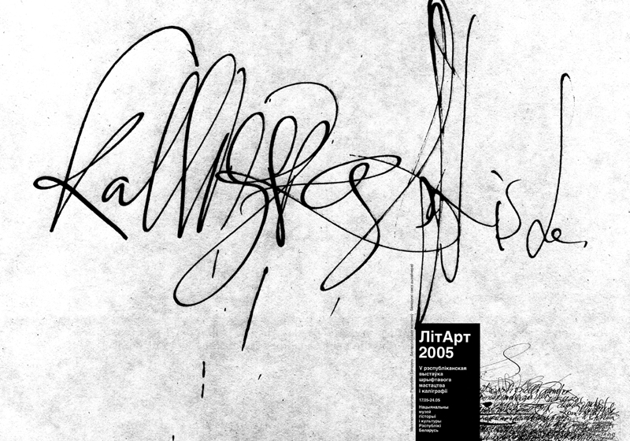
35.
«Happy New Year! 2010»
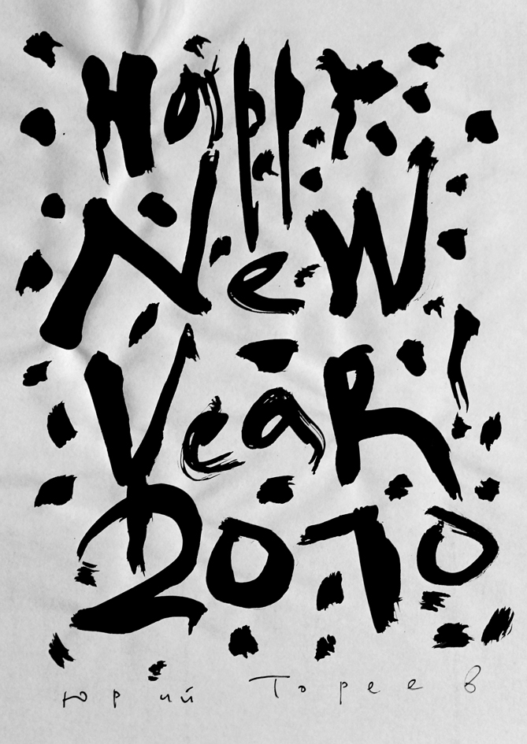
36.
Всенародная радость и ликование. Слова поздравления написаны как будто рукой человека, привыкшего носить тяжести (попросту — грузчика), и не имеющего представления о красоте шрифта.
Нет, это написано рукой Художника, отлично владеющей искусством каллиграфии. Но почему же буквы так корявы и черны? И почему между ними летают черные пятнышки (играющие роль снежинок, традиционных для новогоднего плаката?) Видимо, Художник не ждёт от Нового года ничего хорошего. Одна из черных «снежинок» даже плачет черными слезами, предвидя в наступающем году такие же «радости», как и в прошедшем. Одним словом, всё это — игра в поздравление (несколько мрачноватая).
«Gender format»
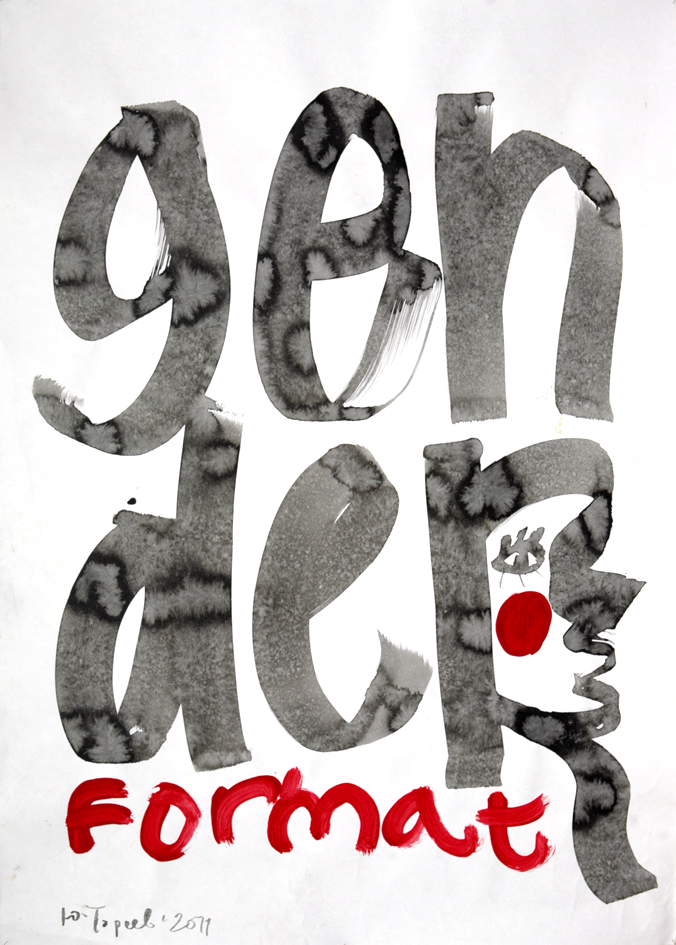
37.
Это игра в социальный плакат. Вся «проблема гендера» подвергается Художником отрицанию. Он рассматривает её как несерьёзную, «дутую», подобно большим серым буквам на плакате. Художник не верит в её актуальность, а все разговоры о ней — не способными что-либо изменить к лучшему в жизни женщин, так как эти разговоры — не что иное, как игра в общественную деятельность.
Задача этой игры — составить слово из вольных черных штрихов на белой бумаге, и одновременно понять, почему это слово связано с образом добродушного и смешливого старичка в круглых очках. У вас это получилось? На мой взгляд, здесь заложена мысль: театр — это свободное искусство. Оно произошло из древних игр, но в наше время его устои серьёзно расшатываются, и за дальнейшую судьбу театра невольно чувствуешь тревогу.
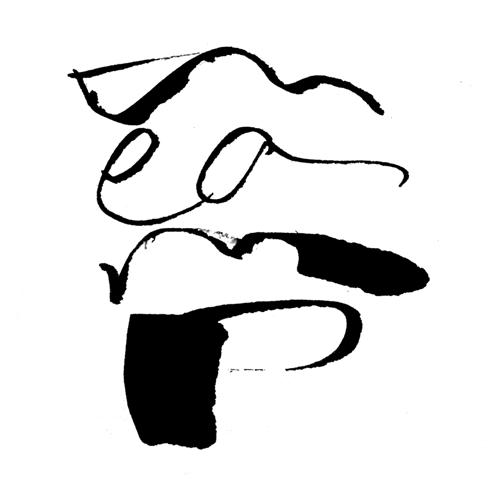
38.
«Chopin».
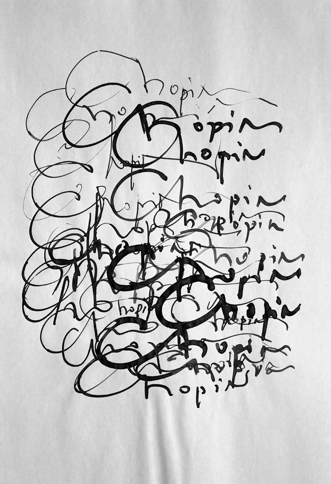
39.
В этом каллиграфическом этюде шрифт играет, подобно музыке Шопена. Многочисленные завитки буквы С воспроизводят рисунок фиоритур в фортепианных опусах композитора, а росчерки в конце имени изящно закрывают музыкальные фразы. В такой игре нельзя быть абсолютно свободным. Необходимо соблюдать ритм и варьировать громкость — иначе игра превратится в шум. Юрий Тореев искусно избежал этого.
(рис.40) — это игра в «угадайки», где выигрыш невозможен. Наверное, самое изощрённое воображение не усмотрит в этой хаотической структуре какой-либо сюжет. Здесь кисть и перо Художника разгулялись в полной мере, доказав, что абсолютная свобода без правил кое-где возможна.
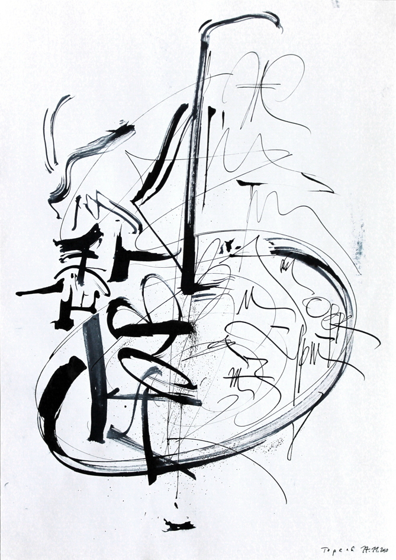
40.
Манифесты антиэстетизма
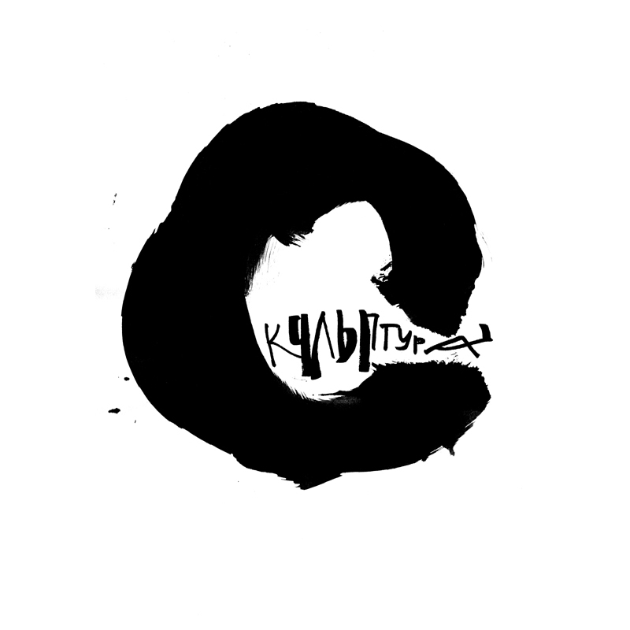
41.
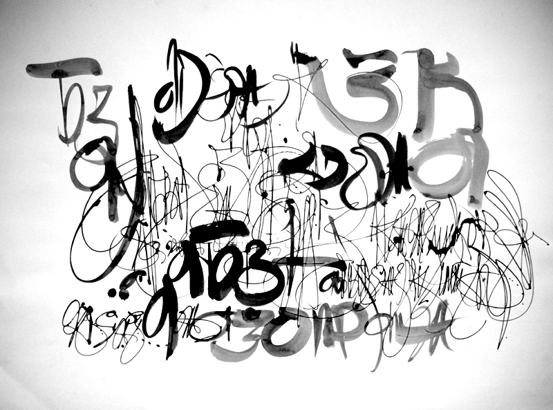
42.
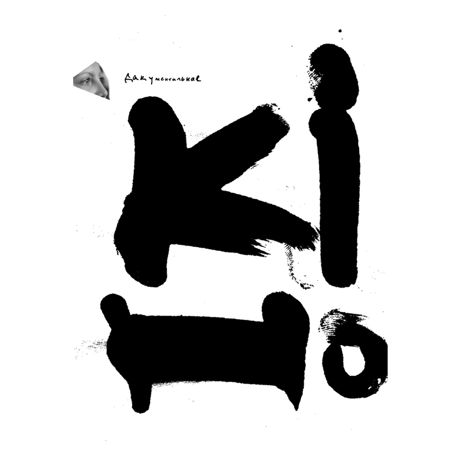
43.
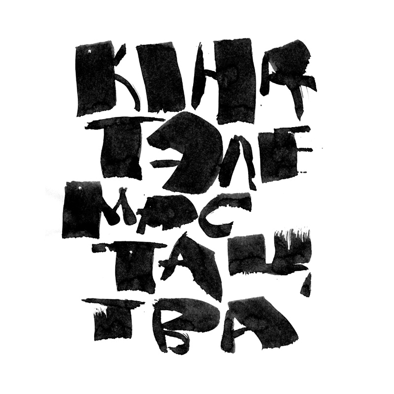
44.
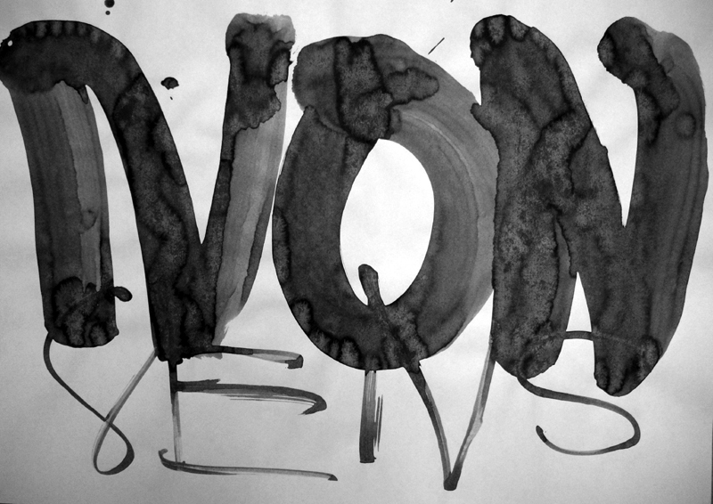
45.
Эти пять мини-плакатов можно понять как обвинительный приговор массовым жанрам искусства нашего времени. В самом деле: если культура гибнет в тисках ограничений (рис. 41), то она порождает абсурд (рис. 42), псевдо-документальные кино и телевидение (рис. 43, 44), а в результате получается нонсенс (рис. 45). — Не лишено вероятности и другое предположение: может быть, брутальный стиль этих плакатов — всего лишь приём, привлекающий массового (не слишком культурного) зрителя?
Л. Миронова,
03.04.2014